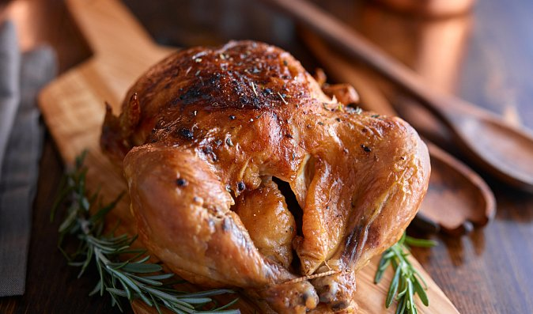

Tradiční pečené kuře s máslem a grilovacím kořením, které krásně voní a má křupavou kůrčičku.
Pekáč s víkem vymažeme sádlem nebo máslem. Zbytek tuku položíme do pekáče. Očištěné kuře nebo kuřecí čtvrtky osolíme ze všech stran a rozložíme na tuku v pekáči.
Trochu podlijeme vodou, přidáme nakrájenou slaninu a dáme do trouby. Pečeme při 170 °C asi 30 minut.
Cibuli a česnek oloupeme a nakrájíme nadrobno.
Po půlhodině pečení přisypeme ke kuřeti pokrájený česnek, aby byl po celé ploše pekáče, podlijeme a dáme zpět péct.
Po čase přidáme nakrájenou cibuli pod maso, kuře posypeme grilovacím kořením a ještě dopékáme.
Doba pečení závisí na velikosti kousků a teplotě, ideálně péct cca 1,5 hodiny. Před koncem pečení odklopíme víko, aby byla kůrka křupavá.
Podáváme s brambory, bramborovou kaší, hranolky z trouby nebo bramborovými knedlíky.